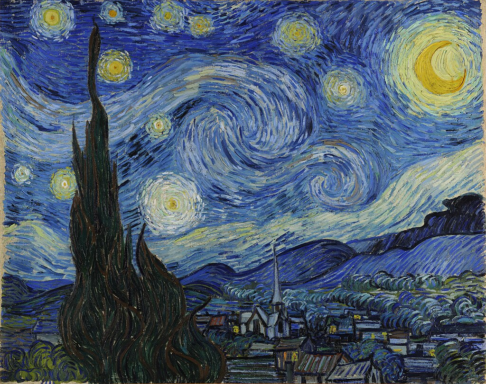
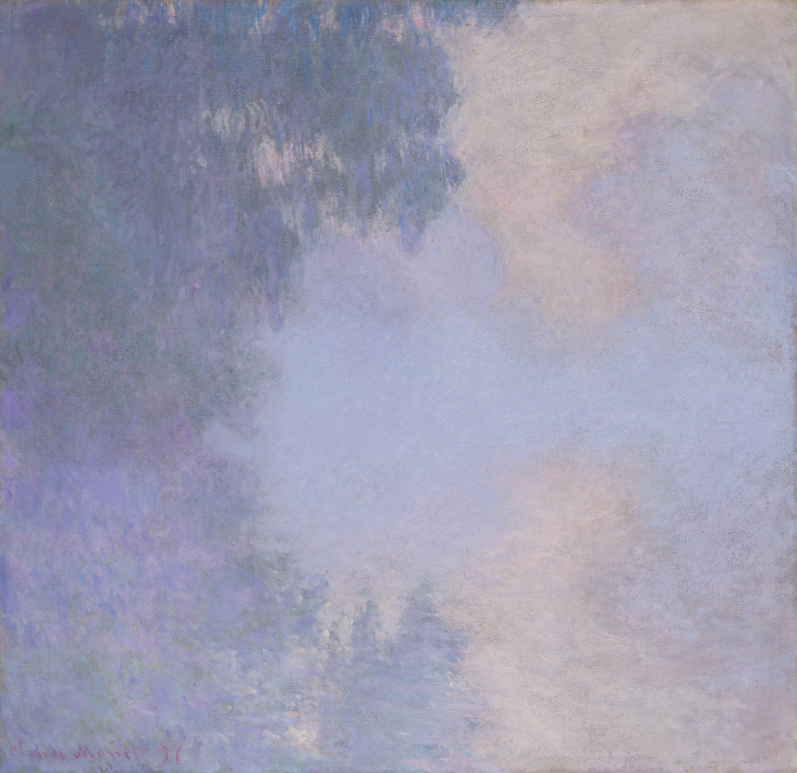
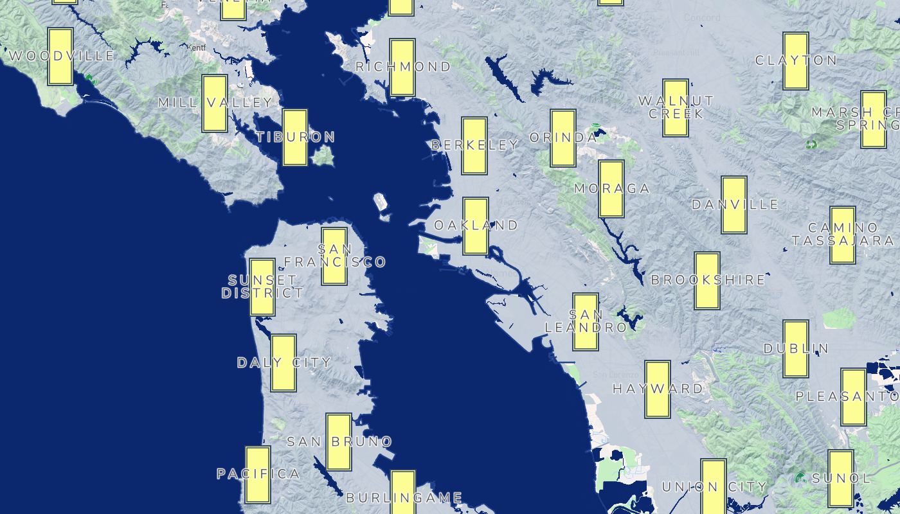
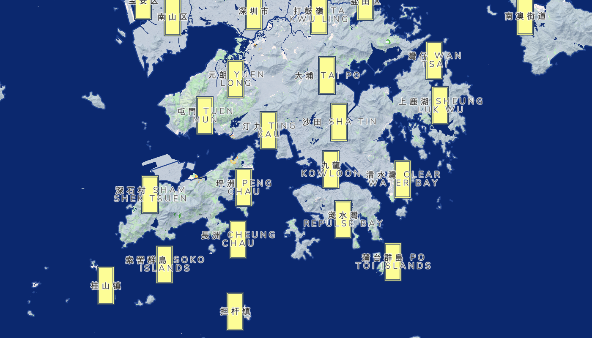
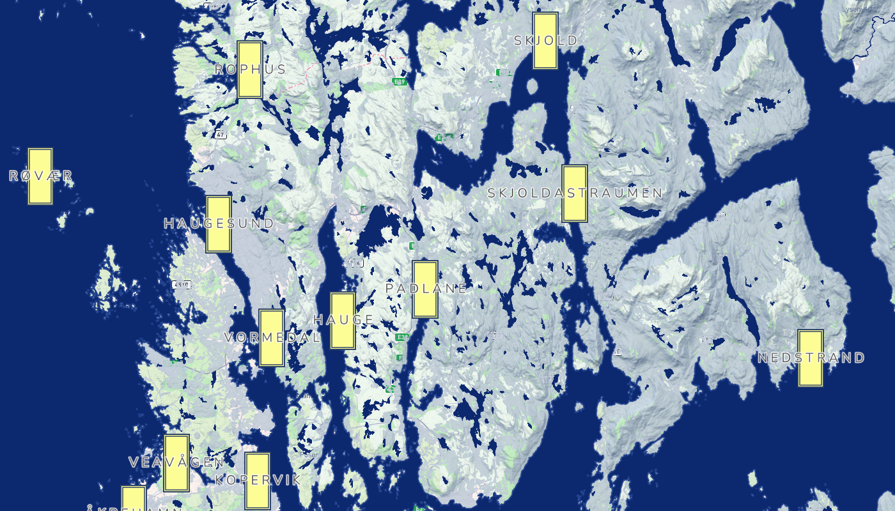
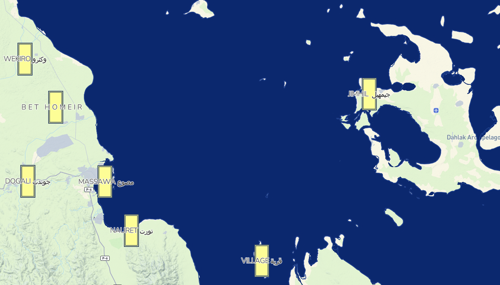

The Energy of Waves (The Great Wave off Kanagawa)
Using rounded corners and rhythmic lines to depict the dynamic of waves; the roads and water systems adopt flowing curves and dashed lines, emphasizing “flow”.
Blue is visible in our daily lives, including the sky, ocean, jeans, cornflowers, and even the eggs of mockingbirds. In artistic creation, blue embodies artists' unique understanding of the relationship between humans and nature.
Using rounded corners and rhythmic lines to depict the dynamic of waves; the roads and water systems adopt flowing curves and dashed lines, emphasizing “flow”.

The label uses halo and slight blurring to simulate the soft and bright layers of starlight; deep blue contrasts with warm yellow dots of light.

Background and water use a light blue-gray gradient; terrain shadows reduce contrast, creating a soft and misty feel with white space.
In the map, black cats represent cities. The symbol is adapted from the vertical signature/cartouche in Hokusai's The Great Wave off Kanagawa.
“The blue language covers the whole world, and we can feel its presence in ports, glaciers, lakes, and other places in every corner”




San Francisco Bay
Hong Kong & New Territories
Bergen, Norway
Gulf of Aqaba, Red Sea
Credits:
Map created with Mapbox Studio
Data from openstreetmap